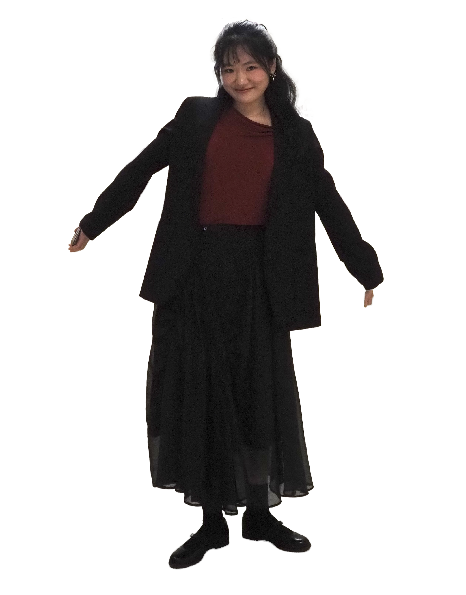
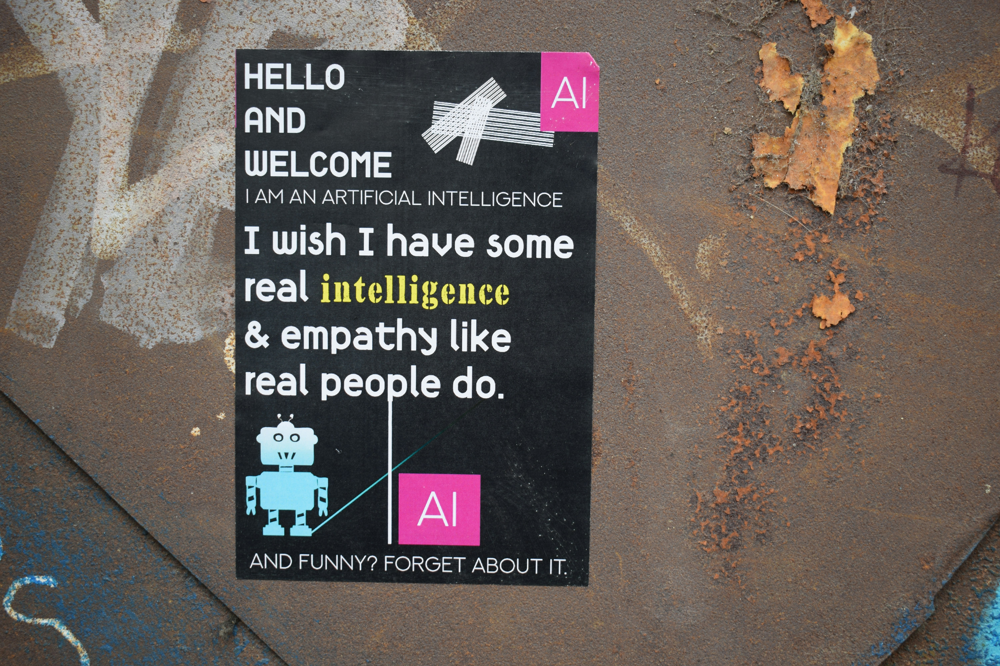
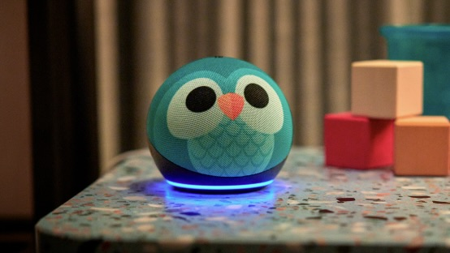
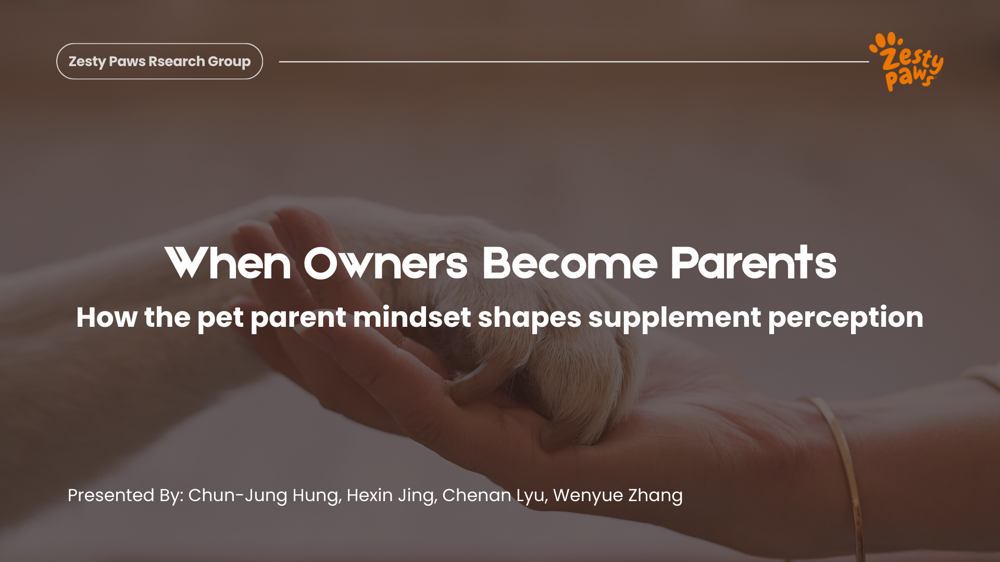
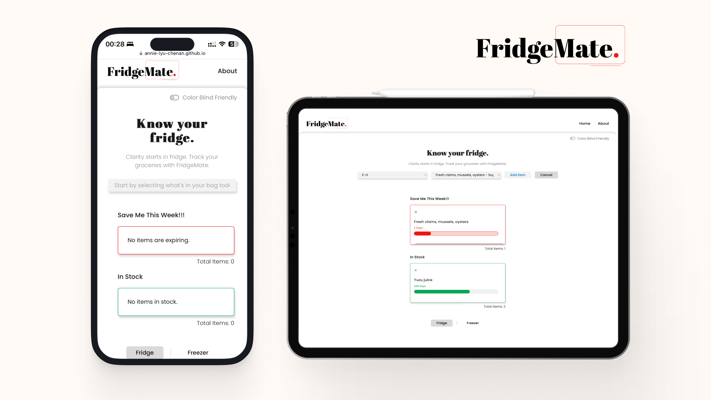
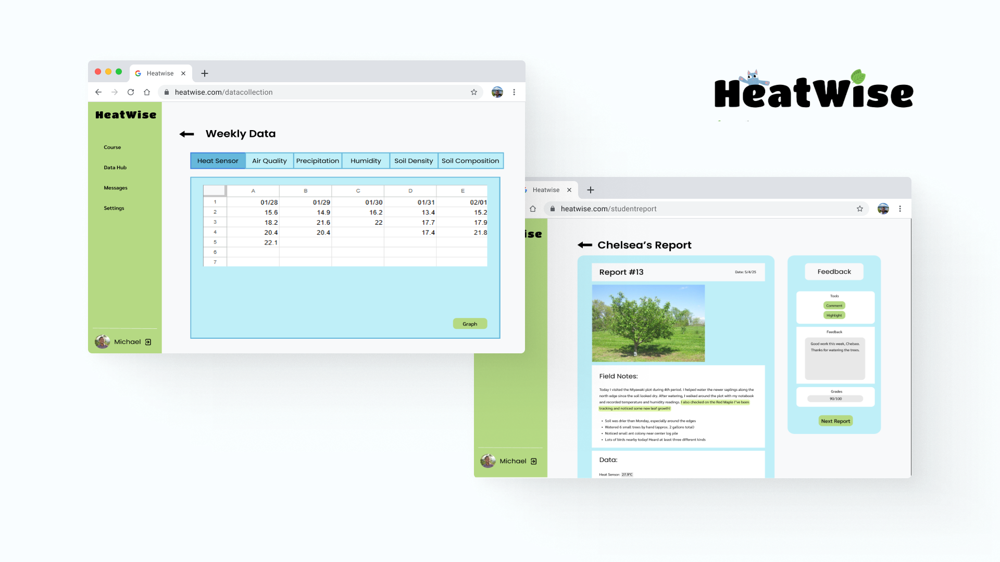

Hello!
research –
design –

– insights
Welcome to Chenan (Annie) Lyu's archive. I'm a media psychology researcher, a designer, and a people observer. Outside of work, I'm also an intermediate knitter!
你好！欢迎来到吕晨安的电子档案。我的兴趣是媒体心理学和平面设计，同时也是一个资深人类观察家。最近我的爱好是棒针编织！
research
- Coursework
- Conference

This thesis explored how users evaluate empathic GenAI chatbot responses and identified linguistic cues associated with authenticity. Results of an experimental study and a corpus analysis showed that empathic responses were perceived as positive confirmations when they aligned with users’ heuristics of GenAI as a practical and competent co-worker, but as negative violations when they became inauthentic and artificial through overly elaborative performances of empathy.

The study proposed an experimental approach to analyze children's trust evaluations toward AI chatbots, detailing below the technological and message features considered for manipulation, as well as the psychological mechanisms through which “trust” is conceptualized.
The study explored whether audiences showcase different levels of forgiveness to mistakes in AI-assisted journalism. Findings of an experimental study suggest that AI-assisted articles were generally met with greater forgiveness, particularly for less involving topics. One possible interpretation is that lower expectations toward AI enabled content may make mistakes appear more understandable and therefore more forgivable.
insights
- Case Studies
- Market Research
- Stories

The marketing research project examines how parenting mindset of pet owners shapes supplement choices and spending, thereby providing actionable guidance for Zesty Paws' product development and brand communication.

design
- UX
- Front End

A webpage product to help users stay connected to their food storage and reduce waste.

A UX project to help teachers and students in Boston Public Schools to teach and learn environmental science in an engaging way.